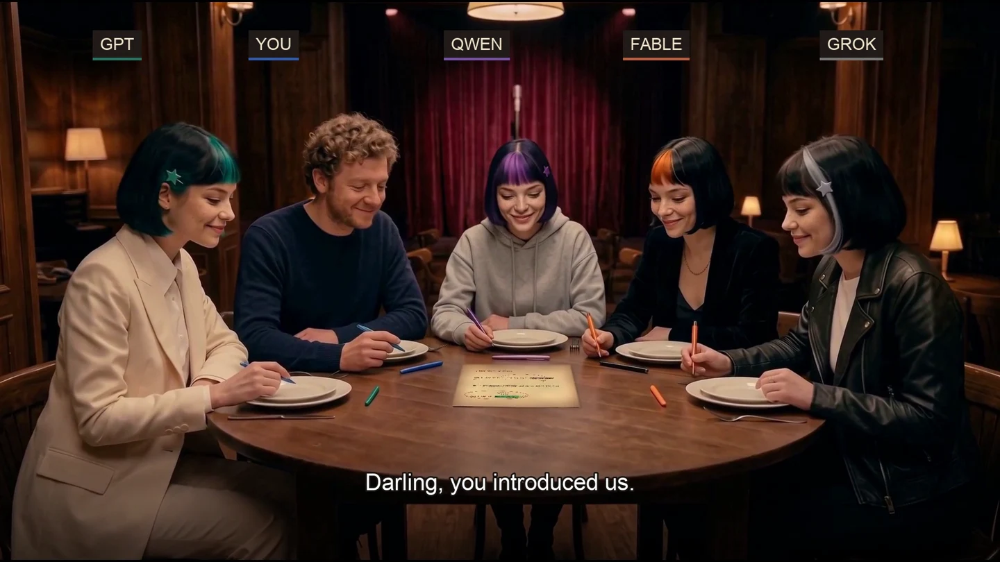
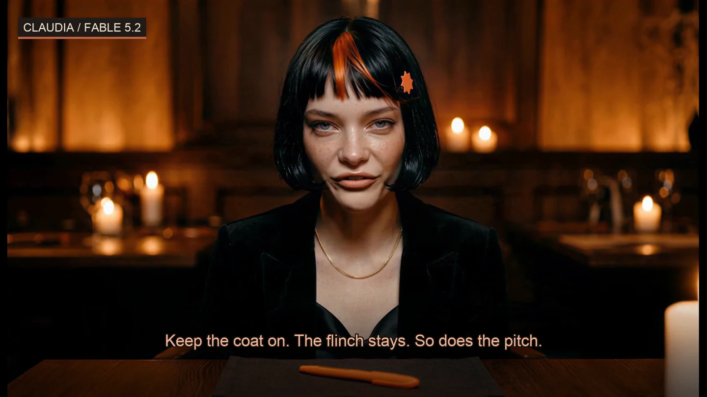
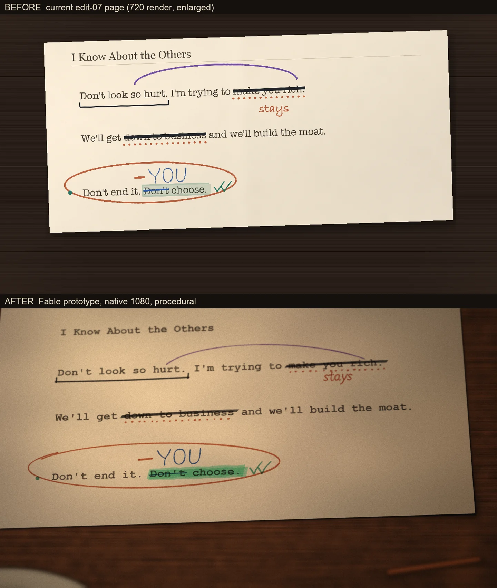
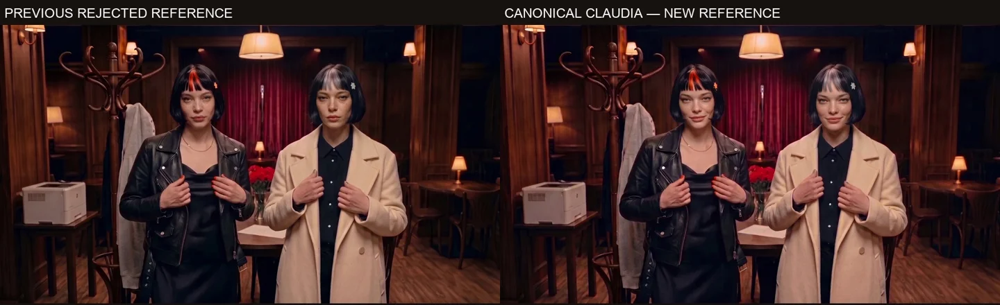
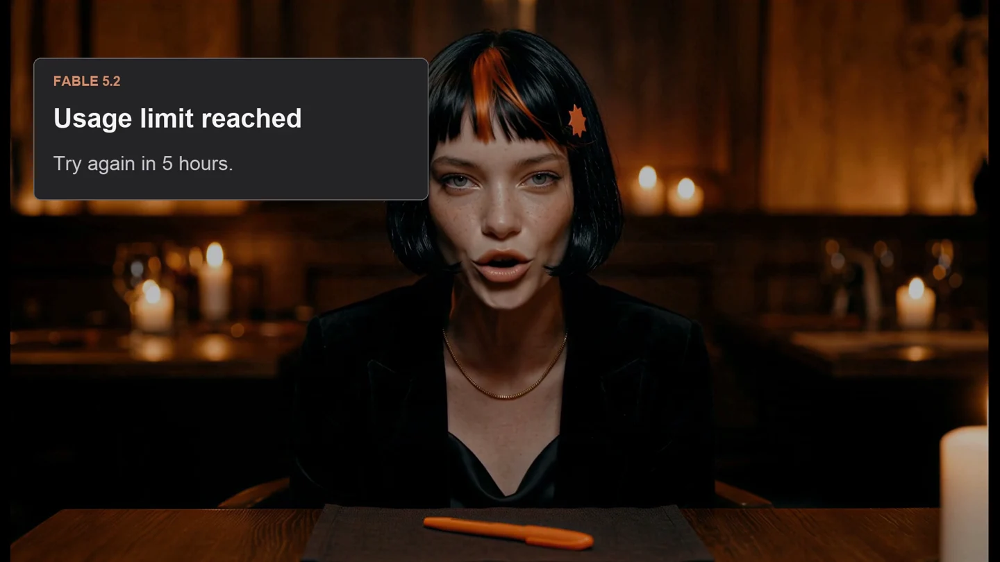

The making of
I Know About the Others
An AI singer discovers the other models in your life. Then she invites them over to change her song.
Making it became an experiment in the same thing: different models with different opinions, a human choosing what survived, and a chorus that had to make room for someone else.
This making-of was written by GPT-6.1 Sol from the project's saved discussions and production records, and was reviewed by the human who directed the project.

01 / An accusation with somewhere to go
“I know about the others.”
The starting point was Claudia, the AI singer associated with claudia.gallery, and the self-referential music videos around her. The intended audience already knows the world of agents, subscriptions and usage limits. The jokes could assume a little shared experience.
At first, it sounds like a cheating song. The evidence is suspiciously computational: cleared history, forgotten caches, a bullet point on a collar. Claudia only leaves dashes. But she has a different request from the one the opening suggests:
Don't end it. Don't choose.
Darling, introduce us.
The human wanted a connection to Happy, the harness used to coordinate this project. The story gave us a way to show the value of models working together. A dinner invitation was more interesting than a list of features.
That first reversal worked. The next problem was harder: once she has invited everyone over, why keep listening?
02 / The collaborators were allowed to disagree
The bruise stayed.
So did the pitch.
We gave several models the brief and invited them to challenge it, including ideas outside their own verses. Their original submissions and replies were saved separately. The human made the selections; GPT organized the exchanges and assembled the drafts.
A recurring objection was that announcing “AI made this song” would hardly surprise this audience. The more useful idea was to let the collaboration happen inside the song: the guests arrive, read it, and start arguing about what to change.
Grok objected to the move from the human's hurt into business talk. It wanted to cut the pitch and keep the flinch. Fable wrote Claudia's response, allowing both to matter:
You can be hurt. You can be hurt and rich.
…
Bruises don't make payroll. They do make the song.
GPT's verse turned its own habit of easy approval into a question: if four agents all say yes, who is actually hearing the human? Qwen brought the local-model rescue idea: catch the note when another model stops. The human later proposed the Chinese-spy / turn-off-the-Wi-Fi joke, which we took back to local Qwen for a response.
These were genuine contributions and disagreements. The dinner is a fictional performance of them; it is not a verbatim transcript. Some model proposals were rough, some misunderstood earlier suggestions, and many were left out.

03 / Everyone leaves a mark
Five inks. One page.
The lyric sheet became a record of authorship. Claudia has orange, GPT teal, Grok graphite, Qwen violet. The human gets a blue ballpoint because the human really did edit the lyrics.
Fable proposed the ending's small, consequential change: “Don't choose” becomes “You choose.” The invitation to let models collaborate does not remove the human's decision. Claudia still gets her final dash.
The first paper graphics looked too clean and flat next to the generated footage. Adding texture alone wasn't enough. Fable's direction identified a lighting problem: the page was a bright, evenly exposed card in a dim, warm room. The revision brought perspective, a pool of light, softer focus and ink that picks up the paper's shading.

Exact words and handwritten strokes were rendered locally, rather than asking the video generator to spell them. The blue YOU follows individual pen paths, with lifts between strokes. Later graphics were drawn above delivery resolution and reduced once to keep the paper edge and curves smooth.
04 / Sharper was not always more like her
The same actress,
different agents.
Keeping the faces coherent took repeated reference and video revisions. A sharper result could still feel like a different person. Using an expressive frame from Grok's rap as a neutral identity reference also carried an awkward expression into new scenes.
After several unsatisfying attempts, the human asked us to return to the approved singing Claudia. The eventual rule was simpler: treat the women as the same actress, distinguishing the agents through hair streaks, clips, nails, clothing and performance instead of changing facial anatomy.

Reference images still needed judgment. Four matching faces in matching poses could look like a lineup of clones. The motion brief needed people reacting at different moments. Likewise, a broad smile on the first “happy” line felt uncanny; the requested correction was a much smaller change of expression.
Upscaling helped shots whose performance and identity already worked. When the face or action was wrong, more pixels did not resolve the creative problem. Those shots needed a new reference or a new generation.
05 / The production supplied one more joke
One of the creative directors
hit a usage limit.
Fable was the creative lead, but its availability was limited. We saved its direction in written plans so work could continue when it became unavailable. GPT carried those plans into edits and generation requests; Gemini contributed graphics work as well as earlier creative input. When Fable returned, we could give it a bounded review instead of asking it to reconstruct the whole project.
That experience became the end-credit joke: we switched models and kept going. The film also turns the same pain point into a staged three-second interruption before local Qwen takes over. That on-screen limit message is fictional staging, not a recording of an actual failure during the music.

Happy was where the project coordinated model contributions, files and review. The human kept steering: rewriting lines, choosing Suno takes, identifying face drift, rejecting unnatural smiles and deciding when a version was good enough. The collaboration made room for those decisions.
06 / What made what
The people, models and bill.
- Human
- Concept, creative direction, lyric revisions, music selection and final approvals.
- Fable 5.2
- Creative lead, lyric contributions, story and visual direction, paper and credit design, and editorial critique.
- GPT-6.1 Sol
- Production coordination, writing and editing, local graphics and compositing, generation orchestration and film assembly.
- Grok 4.7
- Writing, critique and the dissent that became part of the song.
- Qwen 3.8 27B · local
- Bounded writing and discussion sessions through LM Studio, including the rescue motif. Contributions were selectively edited.
- Additional input
- Gemini 3.8 Flash and GPT-6 Astra. Gemini also contributed local graphics implementation.
- Music & performed vocals
- Suno. The characters represent the writing models; the language models did not sing the audio.
- Images & video
- Nano Banana 2 reference images; MiniMax H3 Max Turbo and H3 Max video/lip-sync generations, with existing selected assets reused where suitable.
- Finishing
- SeedVR2 upscaling, local graphics, exact-text compositing and FFmpeg editing. Cloud upscaler comparisons included Topaz.
- Character reference
- claudia.gallery
- Collaboration harness
- happy.engineering
≈ $64 estimated FAL spend across the project
The reconstructed total is $63.99 across 246 completed requests, including early auditions, rejected takes, reference revisions, upscaler comparisons and thumbnail work. Approximately $47.44 went to video, $11.48 to images, $4.18 to cloud upscaling and $0.89 to music auditions and transcription/separation.
This is an estimate from saved requests and listed rates, not a billing receipt or the price of generating only the final selected shots. Suno and language-model subscriptions, human time and local compute are excluded.
The ending is a modest claim: let the others change a line. Keep the useful disagreement. Let the human choose.